El telescopio como recolector de luz
Del refractor de Galileo a espejos segmentados de 10 m, óptica activa y adaptativa: el aparato que concentra la luz antes del detector.
Esta clase se centra en el instrumento que dobla y concentra la luz, no en los detectores (clase 2). El Módulo III recorre técnicas de observación y las tecnologías que las hicieron posibles — escalas de décadas, como Hubble o James Webb.
Refractores: lentes y límites
Galileo usó un refractor: lente objetivo concentra la luz; ocular la paraleliza para el ojo.
En audio: «difracción de la luz en lentes». Físicamente es refracción (cambio de índice al entrar/salir del vidrio). La dispersión cromática produce arcoíris en los bordes del campo.
Limitaciones: solo se sujeta por los bordes → flexión y vibración; vidrio grueso y pesado; aberración cromática. Gaia debe corregir movimientos propios espurios por este efecto óptico.
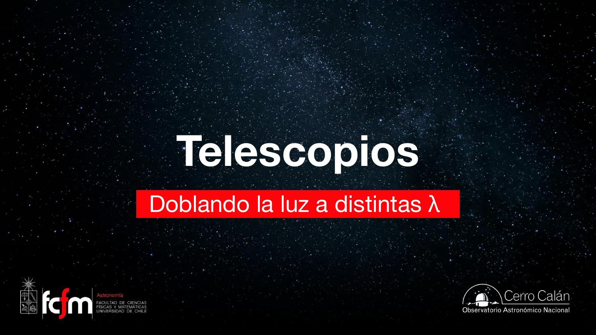
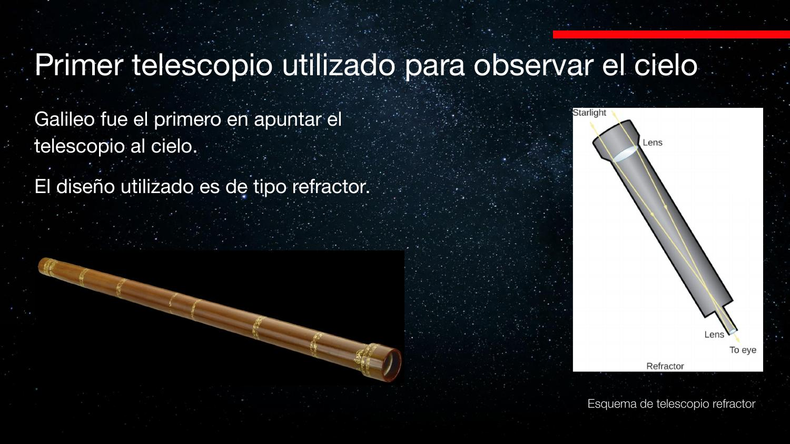
¿Por qué telescopios grandes?
Ley del inverso del cuadrado: flujo ∝ 1/d². Objeto al doble de distancia → un cuarto de luminosidad. Área colectora grande = más fotones por segundo.
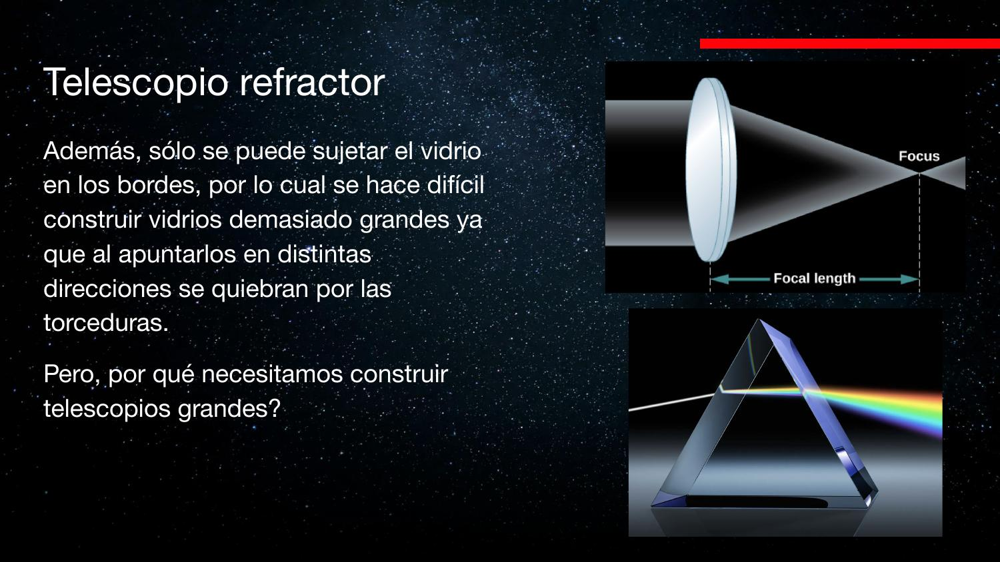
Reflectores: Newton y Cassegrain
Newton: espejo primario + secundario que desvía la luz al lateral. Cassegrain: orificio central en el primario. Ventajas: soporte por detrás, espejos más grandes, corrección activa de forma.
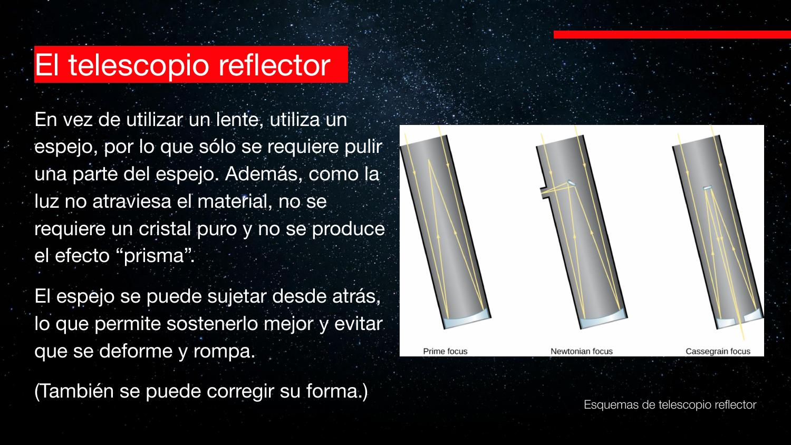
James Webb: capa de oro para reflejar bien en infrarrojo (no por costo del oro, sino por λ).
Escala histórica: Herschel a Palomar
Herschel (~1785): lente ~1,2 m, tubo ~12 m. Yerkes (1890): 1 m, 18 m de largo; piso móvil para el observador. Lick: piso que sube/baja; el mecenas enterrado bajo la cúpula.
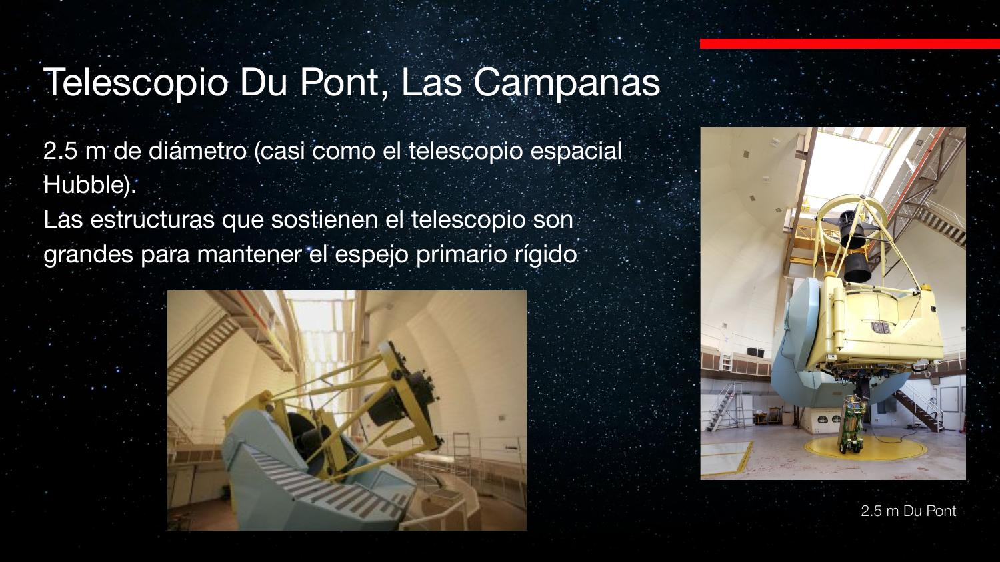
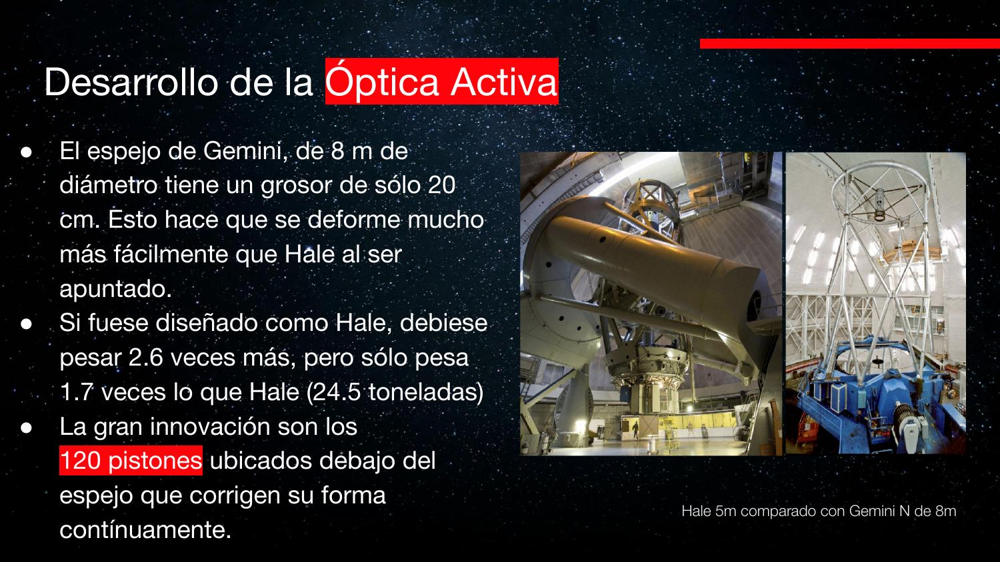
Palomar 5 m (~1948): límite de espejo monolítico rígido. Dupont/Las Campanas 2,5 m: comparable al Hubble espacial en diámetro.
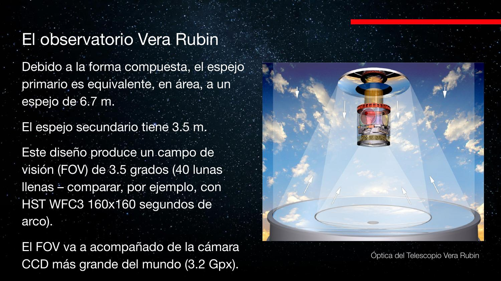
Revestimiento y fabricación
Evaporación en cámara de vacío: filamentos de Al o Ag se evaporan en capas de 2–3 átomos. Mirror Lab (Arizona): vidrio fundido en centrífuga de 8 m, meses de enfriamiento controlado.
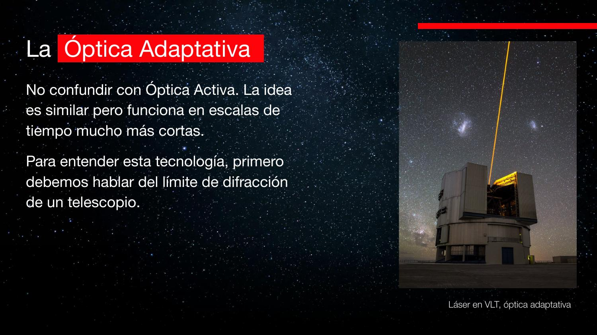
Óptica activa (~8 m)
Gemini 8 m: espejo más delgado + ~120 pistones que corrigen deformación al apuntar. Estrella guía: si se alarga → reenfocar (~1 min). Distinto de óptica adaptativa (atmósfera, ms).
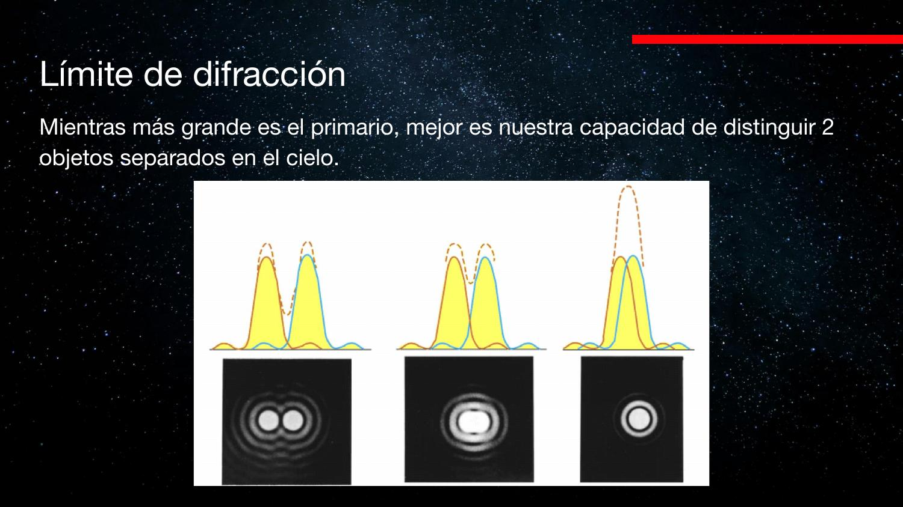
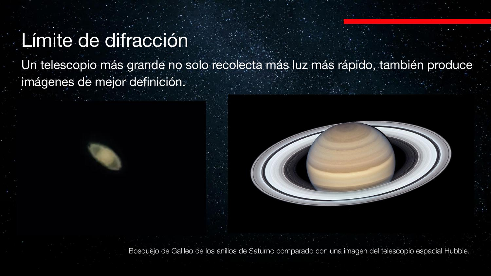
Espejos segmentados
Keck (Hawái): 36 hexágonos de ~2 m, 7,5 cm grosor, 3 pistones cada uno. Problema computacional de los 80: alinear todos los segmentos. ELT: 40 m + láseres para OA.
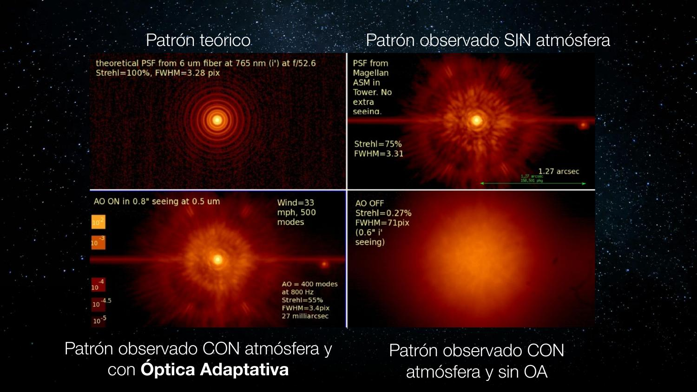
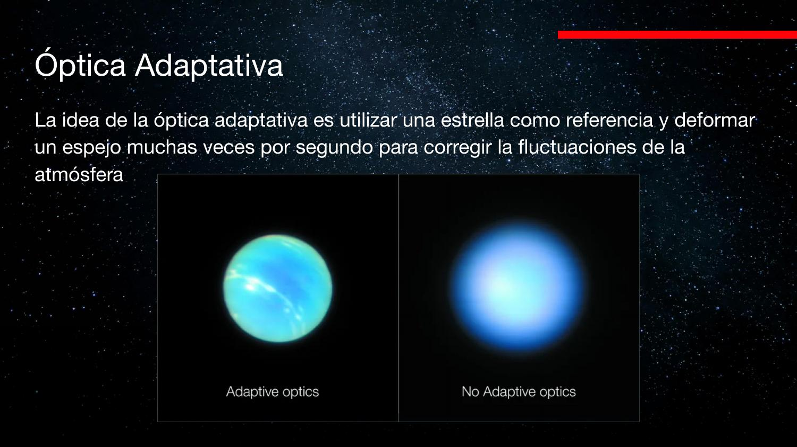
Vera Rubin (LSST)
8,4 m con curvaturas primaria+terciaria; campo 3,5° (~40 lunas). Cámara 3,2 Gpx; ~cada 5 min una imagen; terabytes/noche.
«Verapoint» / «ver a Rubí» → Vera Rubin Observatory (antes LSST).
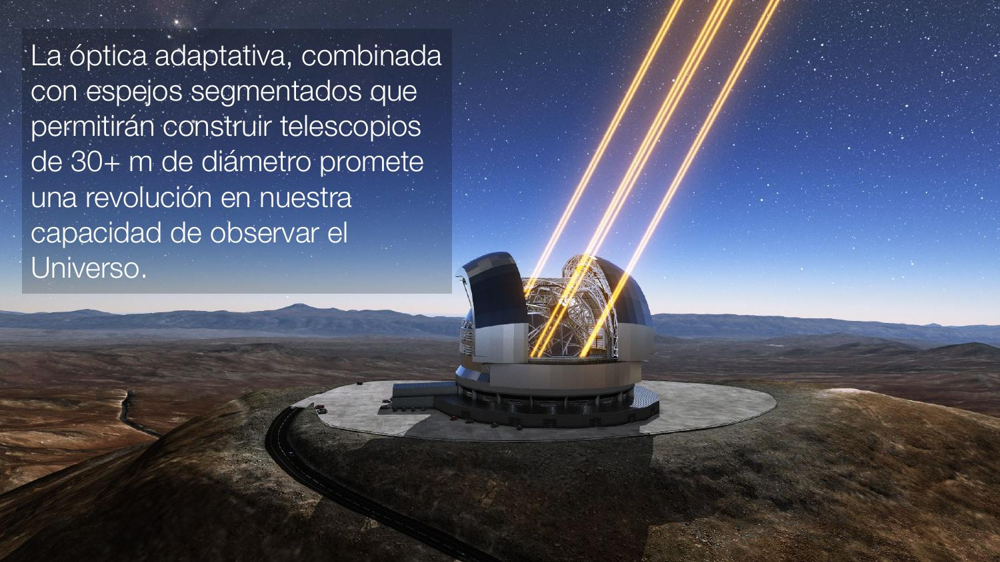
Difracción, seeing y óptica adaptativa
Límite de difracción del telescopio: patrón de Airy. Atmósfera → seeing (imagen que titila y se desparrama).
Audio: «zinc», «SIG», «sync» → seeing. Chile ~0,6″ es excelente; Brasil puede ser 10–100× peor.
Óptica adaptativa: láser en capa de sodio → estrella artificial; espejo deformable corrige frente de ondas en ms. Keck: órbitas estelares en Sgr A* (Nobel Ghez/Genzel). Comparación Galileo vs. Hubble en Saturno.
«Telescopio espacial Hull» → Hubble.
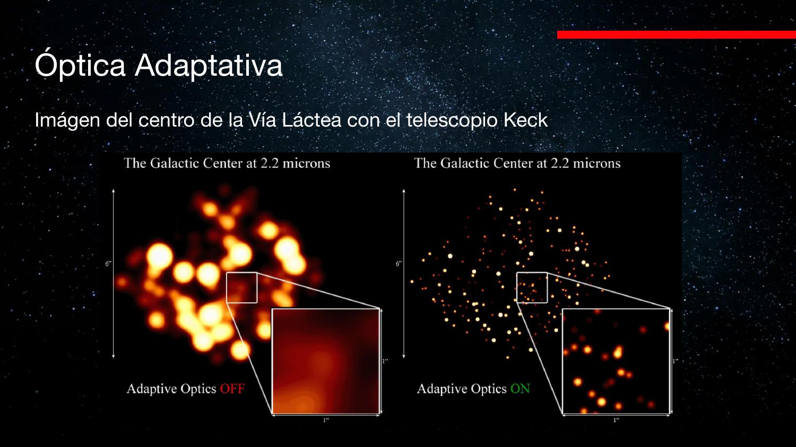
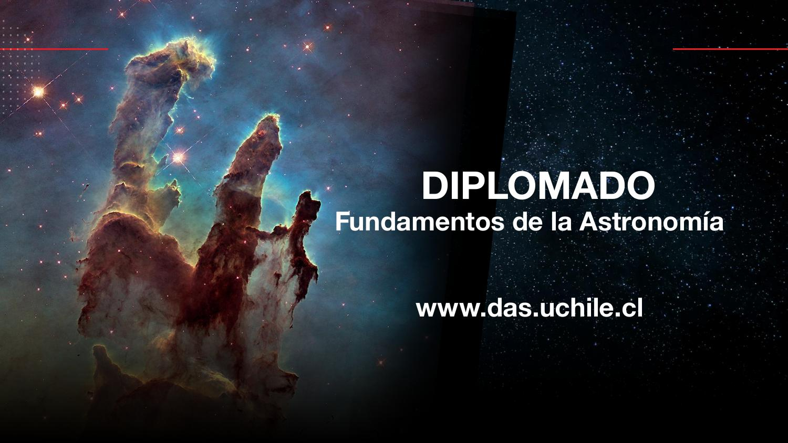
| Concepto | Resumen |
|---|---|
| Refractor | Lentes; limitado por peso y cromatismo |
| Reflector | Espejos; escala a metros |
| Óptica activa | Pistones corrigen forma del espejo (~min) |
| Segmentado | Keck, ELT; muchos grados de libertad |
| Seeing | Turbulencia atmosférica; > difracción en tierra |
| Óptica adaptativa | Corrige atmósfera en ms (láser + deformable) |
Exámenes de práctica
10 exámenes de 5 preguntas (3 alternativas autocorregibles + 2 escritas).